Séance 2 — Mise en place
Cette séance se fait à distance. À la fin, votre environnement de travail sera installé, vous saurez structurer un texte avec des titres, des paragraphes et des listes, et vous aurez écrit la première version de votre projet 1 et la page d'accueil de votre portfolio.
Ce que vous savez déjà
Un rappel rapide : voici ce que vous avez déjà vu en séance 1, et que vous allez réutiliser directement cette semaine.
<!DOCTYPE html>,<html>,<head>,<meta>,<title>,<link>,<body>— le squelette complet d'une page.<p>,<br>,<img>,<hr>— les premières balises de contenu.<strong>/<em>— aperçues en séance 1, vous allez les approfondir aujourd'hui.<!-- -->— les commentaires.<h1>à<h6>— les six niveaux de titres.- Les entités HTML (
&,<…).
Les hyperliens (<a>) ne sont pas encore au
programme : vous les découvrirez en détail à la séance 3.
Sommaire
1. Installer son environnement
Suivez pas à pas le guide d'installation. À la fin, vous devez avoir :
- VS Code installé, avec l'extension Live Server ;
- au moins deux navigateurs (par exemple Chrome et Firefox).
Créer son dossier de travail
Créez un dossier pour le cours, puis deux sous-dossiers : un pour votre portfolio, un pour le projet 1.
web-ba1/
├── portfolio/
│ └── index.html
└── projet-1/
└── index.html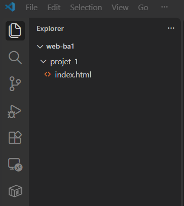
Dans VS Code, ouvrez le dossier web-ba1
(Fichier → Ouvrir le dossier), et non un fichier seul. Live
Server a besoin de connaître le dossier du site, et vous aurez ainsi
le portfolio et le projet 1 sous la main.
Live Server : votre premier serveur
Faites un clic droit sur index.html puis
Open with Live Server (ou le bouton Go Live en bas à
droite). Le navigateur s'ouvre sur une adresse du type :
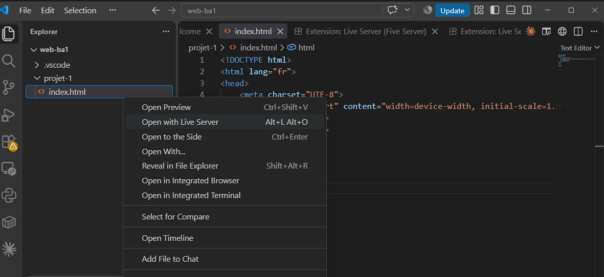
http://127.0.0.1:5500/projet-1/index.html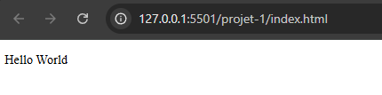
Chez moi, j'ai plusieurs instances de Live Server en cours. C'est pour cela que l'adresse du serveur est différente.
Vous reconnaissez le modèle client / serveur de la séance 1 :
127.0.0.1 désigne votre propre machine,
qui joue ici le rôle du serveur, et 5500 est le port sur
lequel Live Server écoute. À chaque enregistrement
(Ctrl+S), la page se recharge toute seule.
2. Titres et paragraphes
Les six niveaux de titres
Le HTML propose six niveaux de titres, de <h1> (le
plus important) à <h6>. Ensemble, ils forment le
plan de la page, comme la table des matières d'un livre.
Exemple en HTML :
<h1>Le Japon</h1>
<h2>Géographie</h2>
<h3>Les îles principales</h3>
<h3>Le climat</h3>
<h2>Culture</h2>
<h3>La cuisine</h3>
<h4>Les sushis</h4>Exemple en rendu navigateur :
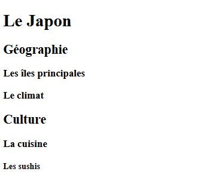
L'indentation ci-dessus sert seulement à montrer la hiérarchie : le
navigateur ne s'en préoccupe pas. Dans la pratique, on dépasse rarement
le <h4>.
Les paragraphes
Chaque bloc de texte va dans sa propre balise <p>.
Le navigateur ignore les retours à la ligne et les espaces
multiples de votre code : il les remplace par un seul espace.
Exemple en HTML :
<p>Ces deux lignes
seront affichées sur une seule ligne.</p>
<p>Ceci est un deuxième paragraphe, séparé du premier.</p>Exemple en rendu navigateur :
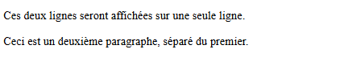
Pour forcer un retour à la ligne à l'intérieur d'un paragraphe
(une adresse postale, un poème), on utilise <br>.
Mais on ne l'utilise jamais pour créer de l'espace
entre deux paragraphes : c'est le travail du CSS.
Exemple en HTML :
<!-- Correct -->
<p>Rue de l'Exemple 12<br>1140 Evere</p>
<!-- Incorrect : <br> utilisé pour espacer -->
<p>Premier texte.<br><br><br>Deuxième texte.</p>Exemple en rendu navigateur :
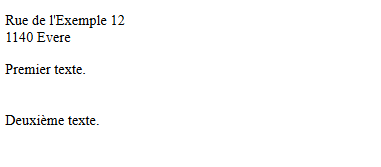
3. Les listes
Liste à puces : <ul>
<ul> (unordered list) sert quand
l'ordre n'a pas d'importance. Chaque élément est
dans un <li> (list item).
Exemple en HTML :
<ul>
<li>Farine</li>
<li>Oeufs</li>
<li>Lait</li>
</ul>Exemple en rendu navigateur :
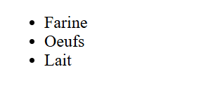
Liste numérotée : <ol>
<ol> (ordered list) sert quand
l'ordre compte : les étapes d'une recette, un
classement, un mode d'emploi.
Exemple en HTML :
<ol>
<li>Mélanger la farine et les œufs.</li>
<li>Ajouter le lait petit à petit.</li>
<li>Laisser reposer une heure.</li>
</ol>Exemple en rendu navigateur :
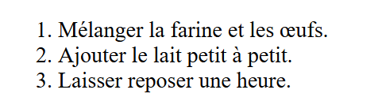
Quelques attributs utiles de <ol> :
| Attribut | Effet |
|---|---|
start="5" |
Commence la numérotation à 5. |
reversed |
Numérote à rebours (un « top 10 »). |
type="a" |
Numérote avec des lettres (aussi A, i, I). |
value="5" (sur un <li>) |
Force le numéro de cet élément précis, sans toucher aux autres. |
Ces attributs sont un peu datés : pour changer l'apparence des
puces ou des numéros sans logique particulière (une étape à
sauter, par exemple), on préfère aujourd'hui le CSS
(list-style-type). Gardez-les pour les cas où ils ont
un vrai sens, comme ci-dessus.
Listes imbriquées
Une sous-liste se place à l'intérieur d'un
<li>, jamais directement dans le
<ul> :
Exemple en HTML :
<!-- Correct -->
<ul>
<li>Fruits
<ul>
<li>Pomme</li>
<li>Poire</li>
</ul>
</li>
<li>Légumes</li>
</ul>
<!-- Incorrect : le <ul> est un enfant direct du <ul> -->
<ul>
<li>Fruits</li>
<ul>
<li>Pomme</li>
</ul>
</ul>Exemple en rendu navigateur :
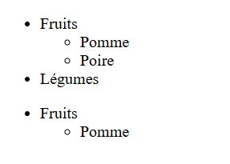
Liste de description : <dl>
Un troisième type de liste, moins courant mais utile pour des paires terme / définition : un glossaire, une FAQ, les caractéristiques d'un produit.
Exemple en HTML :
<dl>
<dt>HTML</dt>
<dd>Le langage qui structure le contenu d'une page.</dd>
<dt>CSS</dt>
<dd>Le langage qui définit son apparence.</dd>
</dl>Exemple en rendu navigateur :
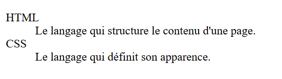
<dl> (description list) contient des
paires de <dt> (description term, le
terme) et <dd> (description details,
sa définition).
4. La mise en emphase
Deux balises permettent de faire ressortir une partie d'un texte. Comme pour les titres, on les choisit pour le sens.
| Balise | Sens | Exemple |
|---|---|---|
<strong> |
Importance forte : un avertissement, une information à ne pas manquer. | <strong>Ne pas dépasser 180 °C.</strong> |
<em> |
Accent d'insistance : le mot sur lequel on appuierait à l'oral. | Je n'ai <em>jamais</em> dit ça. |
Exemple en HTML :
<p><strong>Ne pas dépasser 180 °C.</strong></p>
<p>Je n'ai <em>jamais</em> dit ça.</p>Exemple en rendu navigateur :
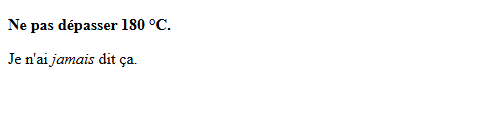
Par défaut, le navigateur affiche <strong> en gras
et <em> en italique. Mais un lecteur d'écran, lui,
peut changer d'intonation : c'est la différence avec un simple style
visuel.
Et quand ce n'est pas une question d'importance ?
<b>, <i> et
<u> existent aussi. Ce sont d'anciennes balises
de présentation, héritées d'une époque où le CSS n'existait pas
encore : elles n'ont pas de notion d'importance
ou d'insistance. La règle : on ne les utilise que s'il n'existe
vraiment aucune balise plus adaptée — ce qui est rare.
| Balise | À utiliser pour | Exemple |
|---|---|---|
<b> |
Attirer l'œil sans notion d'importance : un mot-clé, un nom de produit. | <b>sémantique</b> |
<i> |
Un texte d'une autre nature : un mot étranger, un nom scientifique, une pensée. | <i>Felis catus</i> |
<u> |
Un nom propre, ou signaler une faute connue (dans un correcteur, par exemple). | <u>orthografe</u> |
Exemple en HTML :
<p><b>Offre limitée</b> : plus que 3 exemplaires en stock.</p>
<p><i>Felis catus</i>, le nom scientifique du chat domestique.</p>
<p>Votre nom : <u>Dupont</u></p>Exemple en rendu navigateur :
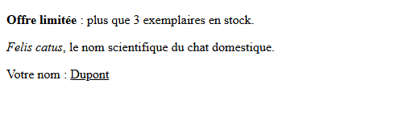
En cas de doute, dans ce cours, utilisez <strong>
et <em> plutôt que ces trois balises.
Texte barré : <s>
Une dernière balise, différente des trois précédentes :
<s> (strike) a bien un sens propre —
elle marque un contenu qui n'est plus exact ou plus
valable. C'est le cas typique d'un prix barré en
promotion.
Exemple en HTML :
<p>Prix : <s>25 €</s> 18 €</p>Exemple en rendu navigateur :
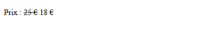
Si vous voulez un simple effet visuel de barré, sans que le
contenu soit réellement obsolète, c'est à nouveau le CSS
(text-decoration: line-through) qu'il faut utiliser,
pas <s>.
Citer et montrer du code
Deux autres balises de texte reviendront souvent dans vos pages :
| Balise | Usage |
|---|---|
<blockquote> |
Une citation longue, reprise d'une autre source. |
<code> |
Un extrait de code informatique, en ligne ou dans un bloc
<pre>.
|
Exemple en HTML :
<blockquote cite="https://exemple.be/source">
<p>Le web est fait pour être lu par tous, humains et machines.</p>
</blockquote>
<p>Pour afficher un message, utilisez <code>console.log()</code>.</p>Exemple en rendu navigateur :
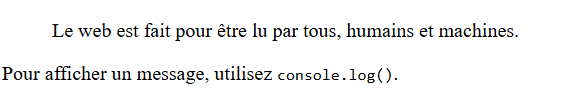
Vous avez d'ailleurs déjà croisé <pre> et
<code> ensemble : c'est exactement ce que cette
séance utilise pour vous montrer ses exemples de code.
5. Les images
Vous avez vu l'essentiel en séance 1 : <img> est
une balise orpheline, avec deux attributs indispensables. Un petit
rappel, avant de les utiliser pour de vrai dans l'exercice puis le
projet.
<img src="crepes.jpg" alt="Une pile de crêpes garnies de sucre et de confiture">| Attribut | Rôle |
|---|---|
src |
Le chemin vers le fichier image (relatif, comme vu en séance 1). |
alt |
Le texte de remplacement : lu par les lecteurs d'écran, affiché si l'image ne charge pas. Jamais vide si l'image porte une information. |
width / height
(facultatifs) |
Les dimensions en pixels. Les préciser évite que la page « saute » pendant le chargement de l'image. |
6. Exercice guidé
Avant le projet, un échauffement. Dans votre dossier
web-ba1, créez un dossier exercice-02 avec un
fichier index.html, et reproduisez cette page :
Exemple en HTML :
<!DOCTYPE html>
<html lang="fr">
<head>
<meta charset="UTF-8">
<meta name="viewport" content="width=device-width, initial-scale=1">
<meta name="description" content="Recette des crêpes, exercice de la séance 2.">
<title>Recette des crêpes</title>
</head>
<body>
<!-- Exercice 02 : recette des crêpes -->
<h1>Les crêpes</h1>
<img src="../images/crepes.png" alt="Une pile de crêpes garnies de sucre et de confiture" width="280" height="250">
<p>
Une recette <em>très</em> simple, pour environ 15 crêpes.
</p>
<h2>Ingrédients</h2>
<ul>
<li>250 g de farine</li>
<li>4 œufs</li>
<li>50 cl de lait</li>
<li>Pour la garniture :
<ul>
<li>sucre</li>
<li>confiture</li>
</ul>
</li>
</ul>
<hr>
<h2>Préparation</h2>
<ol>
<li>Mélanger la farine et les œufs.</li>
<li>Ajouter le lait petit à petit.</li>
<li>Laisser reposer <strong>au moins une heure</strong>.</li>
</ol>
<p>Bon appétit !<br>Et n'oubliez pas la confiture.</p>
</body>
</html>Voici le rendu attendu dans le navigateur, sans aucun CSS :
Exemple en rendu navigateur :
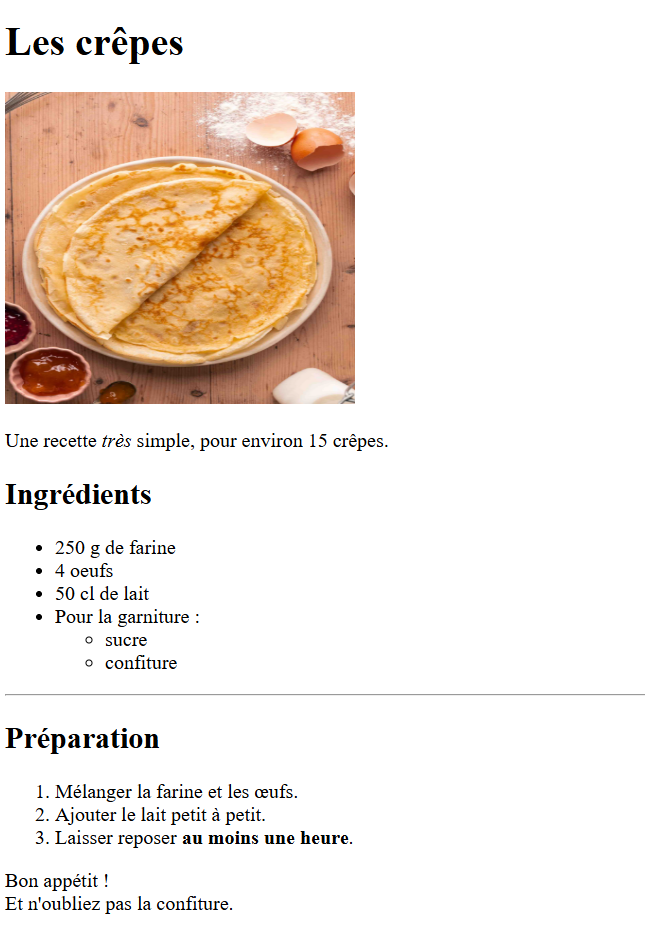
Ensuite, testez-vous :
- Ouvrez la page avec Live Server.
- Supprimez la ligne
<meta charset="UTF-8">, enregistrez, puis ouvrez directement le fichier (double-clic dans l'explorateur). Que deviennent les accents ? Remettez la ligne. - Remplacez le
<ol>par un<ul>: qu'est-ce qui change à l'écran ? Et dans le sens ? - Passez la page au validateur du W3C (onglet Validate by Direct Input, collez le code).
7. Projet 1 — lancement
Le thème
Choisissez un seul thème dans la liste suivante :
- Votre animal préféré
- Un lieu que vous aimez
- Un plat que vous savez cuisiner
- Un livre ou un film marquant
- Un passe-temps
Le thème est libre dans cette liste, mais la structure est imposée : tout le monde construit la même charpente. Ce projet évoluera au fil des séances (liens en séance 3, CSS ensuite) : choisissez un sujet dont vous aurez envie de parler.
La structure imposée
| Élément | Balise | Contenu attendu |
|---|---|---|
| Titre | <h1> |
Le nom de votre sujet (un seul <h1>). |
| Image | <img> |
Une image qui illustre le sujet, avec un alt
qui décrit vraiment ce qu'elle montre. |
| Présentation | <h2> + 2 à 3 <p> |
Présentation du sujet et pourquoi vous l'avez choisi, rédigée par vous. |
| Séparation | <hr> |
Entre la présentation et les caractéristiques. |
| Caractéristiques — les essentiels | <h2> Caractéristiques, puis
<h3> + <ul> +
<li> |
Au moins 4 éléments, dans n'importe quel ordre. |
| Caractéristiques — dans l'ordre | <h3> + <ol> +
<li> |
Au moins 3 étapes liées au sujet, où l'ordre compte vraiment. |
| Un conseil | <h4> + <p> avec
<br> |
Une remarque ou une astuce liée au sujet, sur deux lignes dans le même paragraphe. |
| Emphase | <strong>, <em> |
Au moins une utilisation de chaque, justifiée par le sens. |
| Note personnelle | <!-- --> |
Un commentaire qui vous identifie, en haut du fichier (déjà dans le modèle). |
Avec quatre niveaux de titres (<h1> à
<h4>), la règle de la séance 1 s'applique plus
que jamais : chaque niveau suit le précédent, sans en sauter aucun.
Avant de déposer : la check-list
- Le fichier s'appelle
index.html, en minuscules. - Le squelette est complet :
DOCTYPE,lang="fr",charset,viewport,title,description. - Un seul
<h1>, hiérarchie complète jusqu'à<h4>, sans saut de niveau. <br>utilisé seulement à l'intérieur du conseil, jamais pour espacer deux paragraphes.- Les listes ne contiennent que des
<li>. - L'image a un
altqui décrit vraiment son contenu. - Le code est indenté proprement (VS Code : clic droit → Formater le document).
- Le validateur du W3C n'affiche aucune erreur.
8. Votre portfolio : la page d'accueil
Un portfolio est une vitrine personnelle : il présente qui vous êtes et ce que vous savez faire. Vous pourrez le montrer pour un stage ou un emploi. Vous allez le construire tout au long du cours :
- aujourd'hui : sa page d'accueil, en HTML, avec les balises que vous connaissez ;
- en séance 6 : sa feuille de style ;
- des séances 7 à 9 : le projet 3, qui en fera un vrai portfolio — vos projets 1 et 2 viendront s'y ranger en séance 7 —, mis en ligne en séance 9.
Dans le dossier web-ba1/portfolio/, créez un fichier
index.html avec le squelette habituel.
La structure imposée
| Élément | Balise | Contenu attendu |
|---|---|---|
| Votre nom | <h1> |
Votre prénom et votre nom (un seul <h1>). |
| Accroche | <p> |
Une phrase qui vous présente, par exemple « Étudiant en informatique à l'EAFC Evere ». |
| Image | <img> |
Une photo de vous ou une image qui vous
représente (un avatar, un dessin, un objet que vous aimez), avec
un alt qui la décrit. |
| À propos de moi | <h2> + 2 <p> |
Votre parcours, ce qui vous intéresse, ce que vous attendez de ce
cours. Au moins un <strong> ou un
<em>, justifié par le sens. |
| Mes compétences | <h2> + <ul> |
Au moins 4 éléments : langues, logiciels, qualités... |
| Mes projets | <h2> + <ol> |
Les projets du cours, dans l'ordre : le projet 1 avec son thème en une phrase, puis « Projet 2 — à venir » et « Projet 3 — à venir ». |
| Contact | <h2> + <p> |
Votre adresse e-mail, écrite en texte (les liens arrivent en séance 3). |
| Note personnelle | <!-- --> |
Un commentaire qui vous identifie, en haut du fichier. |
La même check-list que pour le projet 1 s'applique : squelette complet,
un seul <h1>, pas de saut de niveau, listes qui ne
contiennent que des <li>, alt pertinent,
et aucune erreur au validateur du W3C.
9. Le livrable
À déposer dans le devoir Teams de la séance 2 :
- Une capture d'écran de votre environnement : VS Code
ouvert sur votre projet, et à côté le navigateur affichant la page
via Live Server (l'adresse
127.0.0.1:5500doit être visible). - Vos dossiers
projet-1etportfolio, compressés ensemble en un seul.zip(sélectionnez les deux dossiers, puis clic droit → Compresser vers → Fichier ZIP). Les deux fichiers s'appellentindex.html: l'archive évite de les confondre, et garde l'image avec sa page.
Ce dépôt n'est pas noté : il valide votre présence.
10. Exercices
Des exercices corrigés pour pratiquer ce que vous avez vu
dans cette séance, du plus simple au plus complet. Ils sont
facultatifs et ne sont pas à rendre : faites-les en
autonomie, pendant les séances à distance ou chez vous. Les seuls travaux
à déposer dans Teams sont ceux décrits dans les séances 2, 4 et 6.
Créez un dossier exercice-02/ et un fichier par exercice
(ex1.html, ex2.html...).
Envie de vous entraîner encore ? Des exercices courts pour chaque balise vous attendent dans les exercices supplémentaires de la séance 2.
Exercice 1 — Une recette en listes
Partie concernée : les listes.
Écrivez la recette des crêpes avec un titre principal, une partie « Ingrédients » (farine, œufs, lait, une pincée de sel) et une partie « Préparation » en quatre étapes : mélanger la farine et le sel, ajouter les œufs, verser le lait petit à petit, laisser reposer une heure.
Indice
L'ordre des ingrédients a-t-il de l'importance ? Et celui des étapes ? La réponse vous dit quelle liste utiliser pour chacun.
Voir la solution
Solution en HTML (contenu du body) :
<h1>Les crêpes</h1>
<h2>Ingrédients</h2>
<ul>
<li>250 g de farine</li>
<li>4 œufs</li>
<li>50 cl de lait</li>
<li>Une pincée de sel</li>
</ul>
<h2>Préparation</h2>
<ol>
<li>Mélanger la farine et le sel.</li>
<li>Ajouter les œufs.</li>
<li>Verser le lait petit à petit.</li>
<li>Laisser reposer une heure.</li>
</ol>Rendu dans le navigateur :
Pourquoi ? Les ingrédients peuvent être lus dans
n'importe quel ordre : <ul>. Les étapes doivent être
suivies dans l'ordre : <ol>, qui les numérote
automatiquement.
Exercice 2 — Une carte avec des listes imbriquées
Partie concernée : les listes imbriquées.
Écrivez la carte d'une crêperie sous forme de liste à puces à deux niveaux : « Crêpes sucrées » (sucre, chocolat, confiture) et « Galettes salées » (complète, fromage).
Indice
La sous-liste se place à l'intérieur du
<li> « Crêpes sucrées », juste avant son
</li>.
Voir la solution
Solution en HTML (contenu du body) :
<ul>
<li>Crêpes sucrées
<ul>
<li>Sucre</li>
<li>Chocolat</li>
<li>Confiture</li>
</ul>
</li>
<li>Galettes salées
<ul>
<li>Complète</li>
<li>Fromage</li>
</ul>
</li>
</ul>Rendu dans le navigateur :
Pourquoi ? Un <ul> ne peut contenir
que des <li> : la sous-liste doit donc vivre dans un
<li>. Le navigateur change automatiquement la forme
des puces au deuxième niveau.
Exercice 3 — Un petit glossaire
Partie concernée : la liste de description.
Créez un glossaire avec trois termes et leur définition : HTML (le langage qui structure le contenu d'une page), CSS (le langage qui met en forme une page) et URL (l'adresse d'une ressource sur le Web).
Indice
Une liste de description utilise trois balises : une pour la liste, une pour le terme, une pour la définition.
Voir la solution
Solution en HTML (contenu du body) :
<dl>
<dt>HTML</dt>
<dd>Le langage qui structure le contenu d'une page.</dd>
<dt>CSS</dt>
<dd>Le langage qui met en forme une page.</dd>
<dt>URL</dt>
<dd>L'adresse d'une ressource sur le Web.</dd>
</dl>Rendu dans le navigateur :
Pourquoi ? <dl> (description
list) contient des paires : un <dt> (le terme)
suivi d'un <dd> (sa description), que le navigateur
décale vers la droite.
Exercice 4 — La bonne balise d'emphase
Partie concernée : la mise en emphase.
Pour chaque phrase, mettez le mot en gras dans l'énoncé dans la balise qui convient :
- « Attention : le four est très chaud. » (un avertissement)
- « Je t'avais dit samedi, pas dimanche ! » (le mot sur lequel on appuie à l'oral)
- « Le nom latin du sarrasin est Fagopyrum esculentum. »
- « Prix : 8 € 6 € » (l'ancien prix, qui n'est plus valable)
Indice
Quatre balises différentes : <strong>,
<em>, <i> et <s>.
Demandez-vous à chaque fois quel sens a le mot, pas à
quoi il doit ressembler.
Voir la solution
Solution en HTML (contenu du body) :
<p><strong>Attention</strong> : le four est très chaud.</p>
<p>Je t'avais dit <em>samedi</em>, pas dimanche !</p>
<p>Le nom latin du sarrasin est <i>Fagopyrum esculentum</i>.</p>
<p>Prix : <s>8 €</s> 6 €</p>Rendu dans le navigateur :
Pourquoi ? <strong> = importance
(avertissement) ; <em> = insistance à l'oral ;
<i> = un ton différent, ici un terme dans une autre
langue ; <s> = une information qui n'est plus exacte.
Exercice 5 — Citer et montrer du code
Partie concernée : citer et montrer du code.
- Citez en bloc cette phrase de Tim Berners-Lee : « Le Web est plus une
création sociale qu'une création technique. », en indiquant comme source
https://www.w3.org/People/Berners-Lee/. - Écrivez le paragraphe : « Pour créer un paragraphe, on utilise la
balise <p>. », où
<p>est présenté comme du code.
Indice
La source va dans l'attribut cite. Pour afficher
<p> sans créer de paragraphe, souvenez-vous des
entités de la séance 1.
Voir la solution
Solution en HTML (contenu du body) :
<blockquote cite="https://www.w3.org/People/Berners-Lee/">
<p>Le Web est plus une création sociale qu'une création technique.</p>
</blockquote>
<p>Pour créer un paragraphe, on utilise la balise <code><p></code>.</p>Rendu dans le navigateur :
Pourquoi ? <blockquote> signale une
citation longue (le navigateur la décale), et cite garde la
source dans le code. <code> affiche le texte en
police à chasse fixe, et les entités < /
> évitent que <p> soit compris
comme une vraie balise.
Exercice 6 — Trouvez les 5 erreurs
Parties concernées : les listes, l'emphase, les images.
Ce code contient 5 erreurs. Trouvez-les et corrigez-les :
<h1>Mon chien</h1>
<img src="images/chien.jpg" alt="image">
<h2>Ce qu'il aime</h2>
<ol>
<p>Les balades</p>
<li>Les croquettes</li>
<li>Dormir</li>
</ol>
<li>Le canapé</li>
<p>Il ne faut <u>jamais</u> lui donner de chocolat.</p>Indice
Une erreur dans l'image, trois dans la liste (son type, et deux éléments mal placés), une dans le dernier paragraphe.
Voir la solution
Code corrigé :
<h1>Mon chien</h1>
<img src="images/chien.jpg" alt="Un labrador noir couché dans l'herbe">
<h2>Ce qu'il aime</h2>
<ul>
<li>Les balades</li>
<li>Les croquettes</li>
<li>Dormir</li>
<li>Le canapé</li>
</ul>
<p>Il ne faut <strong>jamais</strong> lui donner de chocolat.</p>alt="image"ne décrit rien : l'alt doit dire ce que montre l'image.<ol>pour une liste sans ordre : il faut<ul>.- Un
<p>directement dans la liste : une liste ne contient que des<li>. - Un
<li>hors de la liste : il doit être à l'intérieur du<ul>. <u>pour un avertissement : sur le Web, un texte souligné ressemble à un lien. Ici, c'est une information importante :<strong>.
Sources et ressources
Télécharger cette séance
Pour lire le cours hors ligne, ou pour étudier son code : le zip contient
cette page (index.html), sa feuille de style et ses images.
Ouvrez index.html dans VS Code pour voir les balises et le CSS.